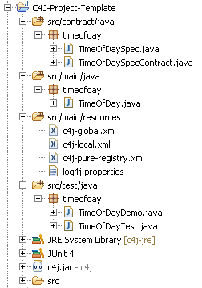

Guidelines
Experience with more than 2.000 students and professionals show that there are some guidelines which help to avoid the most common traps with C4J.
Guideline 1 : Set up your project as a maven project!
The extend assertions concept by means of separating assertions into separate contract classes has one disadvantage: The number of sourcecode files you have to manage will double or triple as each target class has a corresponding class contract and/or interface with its interface contract.An approved way to deal with that complexity issue is to structure the project adhering to the directory structure of an idiomatic Maven project: 
- project home : Contains the pom.xml and all subdirectories.
- src/contract/java : Represents the design level and contains
interfaces, interface contracts and class contracts.
In the TimeOfDay example, these are in the package timeofday:
- the interface TimeOfDaySpec and
- its corresponding interface contract TimeOfDaySpecContract
- src/main/java : Represents the implementation level and contains the deliverable Java sourcecode for the project,
i.e. the target classes.
In the TimeOfDay example, these are in the package timeofday:
- the target class TimeOfDay, which implements TimeOfDaySpec and therefore inherits the TimeOfDaySpecContract contract.
- src/main/resources : Contains the deliverable resources for the project.
In the TimeOfDay example, these are such as the C4J configuration files:
- c4j.global.xml
- c4j.local.xml
- c4j-pure-registry.xml
- logj.properties. - src/test/java : Contains the testing classes (JUnit) for the project.
In the TimeOfDay example, these are in the package timeofday:
- the application class TimeOfDayDemo
- the JUnit test case TimeOfDayTest - src/test/resources (optional) : Contains the resources necessary for testing.
In the TimeOfDay example this directory for test resources is not necessary as there are no test resources.
Guideline 2 : If you need local variables in a pre- or postcondition declare them inside the if statement body!
public class TimeOfDaySpecContract implements TimeOfDaySpec {
...
@Override
public void setHour(int hour) {
// method body sourcecode before the precondition if statement will be skipped
int thisIntWillBeSkipped;
thisIntWillBeSkipped = 1;
if (preCondition()) {
// this works fine
boolean localBooleanInPreConditionBody = false;
localBooleanInPreConditionBody = true;
...
}
// method body sourcecode between the precondition and postcondition if statements will be skipped
boolean thisBooleanWillBeSkipped;
thisBooleanWillBeSkipped = true;
if (postCondition()) {
// this works fine
double localDoubleInPostConditionBody = 0.0;
localDoubleInPostConditionBody = 1.23;
...
}
// methody sourcecode after the postcondition if statement will be skipped
double thisDoubleWillBeSkipped;
thisDoubleWillBeSkipped = 1.23;
}
}
Guideline 3 : If you need a stateful contract use private instance variables!
public class TimeOfDaySpecContract implements TimeOfDaySpec {
private boolean setHourHasBeenCalled;
@Override
public void setHour(int hour) {
...
if (postCondition()) {
...
setHourHasBeenCalled = true;
}
}
@Override
public int getHour() {
if (preCondition()) {
if (setHourHasBeenCalled) {
...
}
}
...
}
}
Guideline 4 : When using the old method do keep in mind that it returns a old reference to the object not a reference to a deep copy of the object!
public class TimeOfDaySpecContract implements TimeOfDaySpec {
...
@Override
public void setHour(int hour) {
...
if (postCondition()) {
...
assert unchanged(target.getMinute()) : "minute unchanged";
// recommended version:
// If minute is changed in the implemented setHour method, the assertion will definitely fail!
assert target.getMinute() == old(target.getMinute()) : "minute unchanged";
// variation 1 : does work as intended as getMinute() returns the basic type int
// i.e. if minute is changed in the implemented setHour method,
// the assertion fails as target.getMinute() != old(target.getMinute()).
assert target.getMinute() == old(target).getMinute() : "minute unchanged";
// variation 2 : does NOT work as intended as target is a reference type
// and therefore: target == old(target), so both references point to the same object!
// As a consequence target.getMinute() == old(target).getMinute() will always be true
// even if minute is changed in the implemented setHour method!
}
}
}